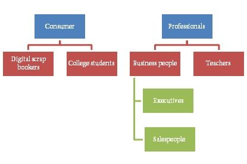

Answer
How would you improve Microsoft PowerPoint?
CANDIDATE: Here’s how I would improve Microsoft PowerPoint.
Candidate writes the following on whiteboard.
First, I’d make sure that I understand our goals & constraints; then, I’d explore the user and use cases; and lastly, I’d prioritize the use cases and focus on brainstorming solutions for the most urgent use case.
INTERVIEWER: Sounds good.
Candidate writes the following on whiteboard.
CANDIDATE: We can consider different goals, such as increasing revenue and engagement. I have revenue in mind, but is there another goal that you prefer to discuss?
INTERVIEWER: I’d like you to focus on revenue.
CANDIDATE: Okay, let’s focus on revenue. It is fair to assume that we will increase revenue by selling an add-on to Microsoft PowerPoint?
INTERVIEWER: Sure, this new product is going to be an add-on product.
CANDIDATE: There are different personas we can consider. Just rattling a few off the top of my head…
Candidate draws the following on the whiteboard.

CANDIDATE: Which persona would you like to focus on?
INTERVIEWER: Salespeople.
CANDIDATE: Based on my understanding, salespeople use PowerPoint primarily for customer presentations. Their desire is to win a business deal. When working on PowerPoint, here are the use cases that come to mind:
Of these different use cases, you can’t solve the latter two without solving the first one. So I feel the first one is most important. If you approve, I’ll brainstorm solutions for that use case.
INTERVIEWER: Go ahead.
CANDIDATE: In response to the need to figure out what to say, there are a couple ideas that come to mind:
INTERVIEWER: What’s your recommendation?
CANDIDATE: Of all the ideas, I prefer Pitch Builder. I believe in the power of templates, and a step-by-step story-building wizard is how professional presenters build effective PowerPoint presentations.
Comments: The candidate does a solid job exploring goals, customer needs and suggests a solution that solves a real problem.